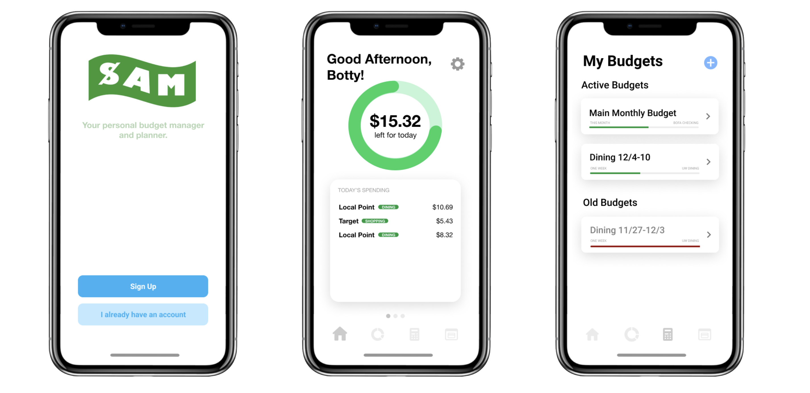

I worked on SAM during my first quarter at UW, as a part of my INFO 200 class taught by Professor Scott Barker. I collaborated with 4 other first-year students, and am incredibly proud of the final product that we were able to create during the course of 3 months.
We were assigned the task of identifying a problem that affects us in our everyday lives with the intent that we would be eventually creating a solution to the issue. One of the most prevalent issues we were able to identify was a lack of financial literacy in ourselves and college students as a whole.
SAM was created to give students a personalized resource to learn about money management and financial literacy. Students are able to connect their personal financial accounts with school related accounts (dining dollars, etc) so that they have a clear understanding of their whole financial picture. SAM provides students with an easy way to visualize their spending, as well as set specific financial goals.
You can see an animated figma wireframe for the SAM app here.